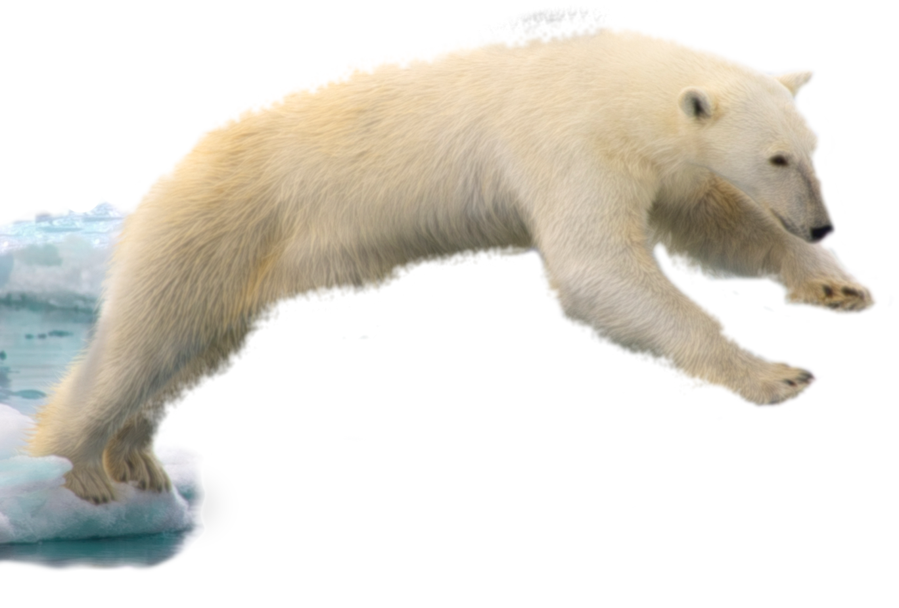

The Enviroment.
You need me. You're killing me.
It was very interesting to create our own satire after reading different types throughout this unit. We decided to use our 3 pieces together to tell a story about the environment. We begin with a teacher teaching a class about the dangers of climate change ending with the contradictory message that everything will be okay. This piece is meant to criticise the lack of awareness and the seeming acceptance of mass extinctions due to preventable climate change. Then the reader explores the impacts of climate change with a fictional snow cone stand, mining ice caps to create commodity items which are not essential to are lives. This piece emphasizes the discongruity between leading species to extinction for objects we never really needed anyway. Lastly, there is an interactive story generator where the reader is forced to grapple with the consequences of mass extinction by creating a folklore for extinct animals. This emphasizes the morality of mass extinction. At every turn in the journey the reader is reminded of the situation through a home page stating "You need me. You're killing me," and an image of a melting ice cap with a polar bear leaping for safety that will never come. Creating satire that is not too obvious, but still manages to get the message across, is a little more difficult than we anticipated. However, satire was a good way to talk about a subject we care about, the environment, in a unique manner that will catch the viewer’s attention. We feel a website was especially suited to our project because it allows the reader to interact with the work and experience each piece in their own time without being led chronologically, even though our website is designed to imply a chronology. Furthermore, a website forces interaction and engagement from the reader. Our group worked well together, and because of that, we were able to tie all our projects together.